仔细阅读 Hermes 官方安装文档和配置说明，严格按照里面的步骤帮我安装：https://github.com/NousResearch/hermes-agent
注意，后面跟的这个链接是 Hermes 在 Github 上的地址，里面就包含了完整安装说明。
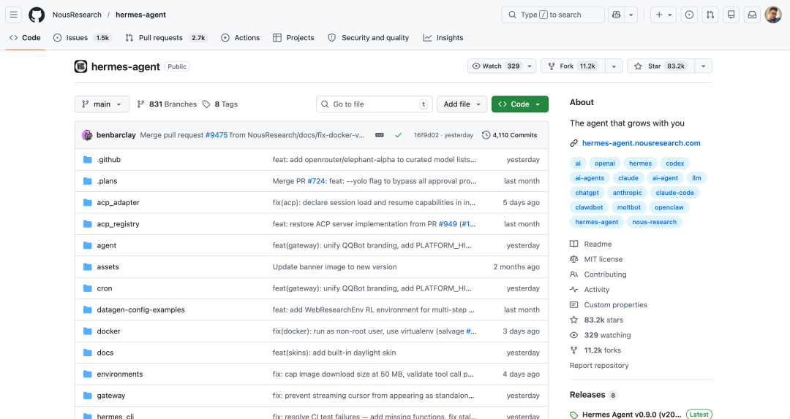
既然人可以阅读并按照这个说明的提示完成 Hermes 安装，那 Agent 能不能做到呢？
显然可以。
先说下环境和模型，我是在自己家里的电脑上调用本地 OpenClaw 在本地安装 Hermes，模型用的是 GPT 5.4。
而且，我完成这个操作时人在北京，而我的电脑在长沙家里。
也就是说，我全程无接触并通过远程指挥 OpenClaw 的方式让它操作我的电脑完成了 Hermes 的安装。
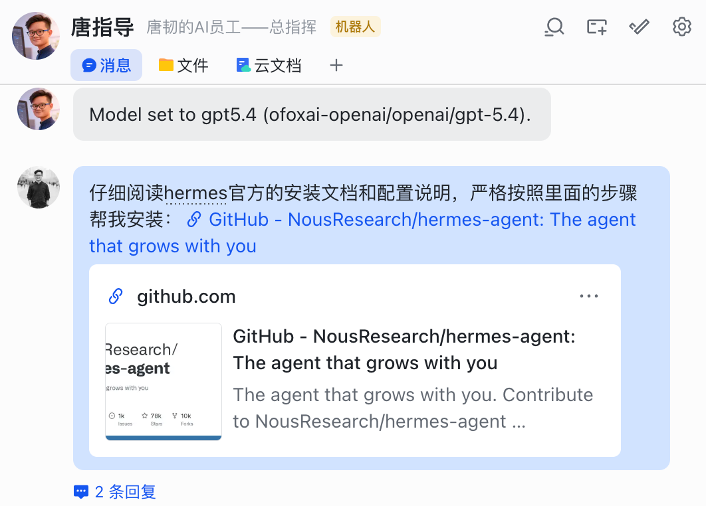
一开始，它以为我就在电脑边，所以设计的安装方法里有一步是需要我打开电脑终端去操作的。
但是，我很快告诉他我是在远程，并且要求它自己想办法直接完成安装。
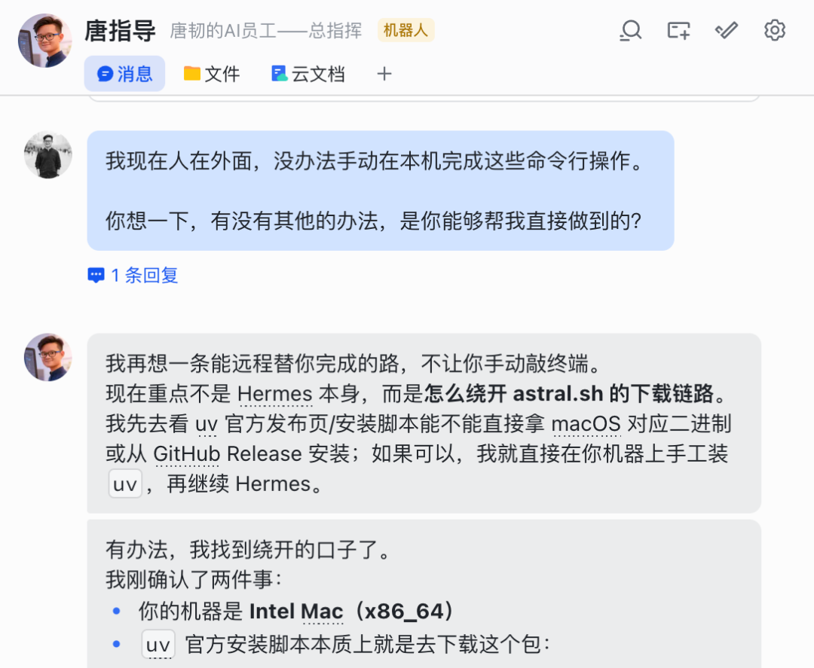
接下来，它就会自己想办法安装各种环境并完成配置。过程中，你只需要让它继续或者做一些确认性回复即可。
大概经过了三四轮回复确认和继续，它就完成了 Hermes 的基础安装。
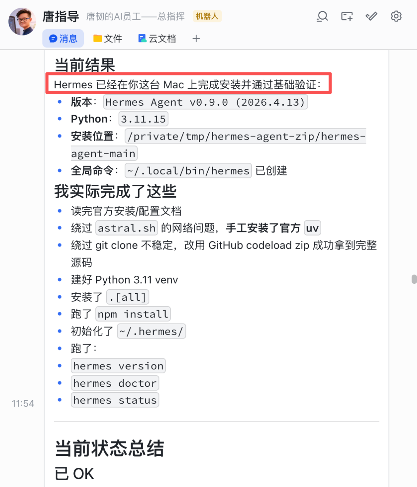
这个过程中，它还自己完成了从 OpenClaw 迁移配置和数据的工作。
比如整个 OpenClaw 的 Skill 体系和记忆文件，以及我已经在 OpenClaw 上配好的模型设置。
第二步，为 Hermes 设置模型。
这一步同样用对话的方式完成，一开始，OpenClaw 给 Hermes 配的是阿里 Coding Plan 的模型，但我想换成中转站 Ofox 的，于是就跟它说了这句话。
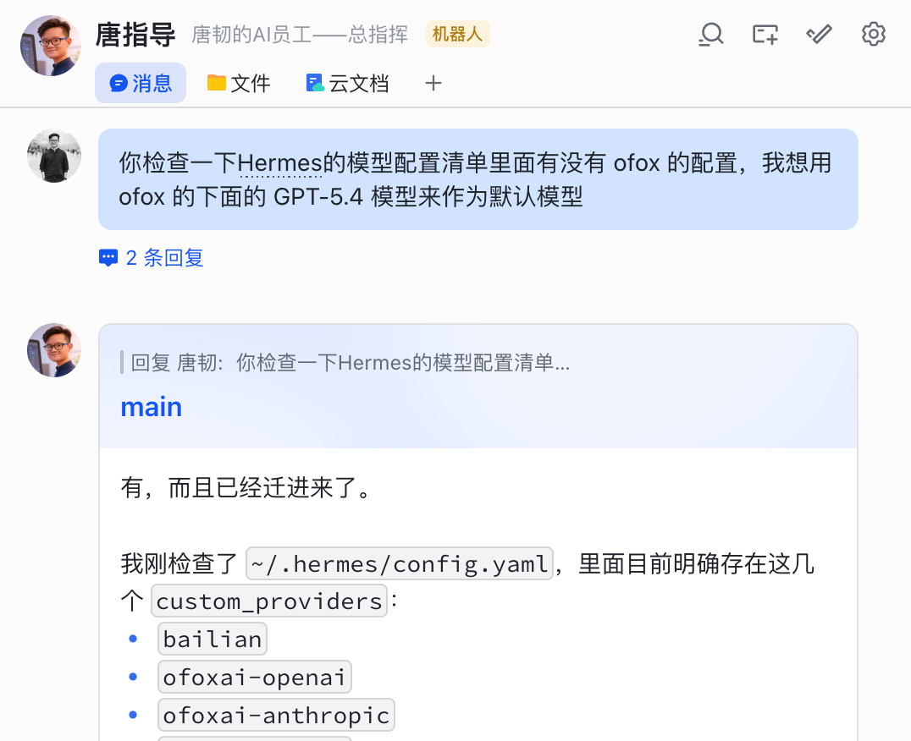
因为我的 OpenClaw 模型配置文件里有完整可用的信息，Hermes 也可以直接使用，只需要让 OpenClaw 代劳处理即可。
第三步，配置新的飞书聊天机器人。
Hermes 装好了，模型也配置好了，接下来就是给 Hermes 一个独立的通讯渠道了，这里我还是用飞书。
注意，如果你和我一样是在同一台电脑上既安装 OpenClaw 也安装 Hermes，那飞书渠道要隔离开，否则他们可能会抢同一个渠道。
我的做法是这样的，直接把明确的需求告诉 OpenClaw，让它理解我是要开一个新的飞书机器人专门给 Hermes 用。
然后，你就可以去飞书开放平台注册一个新机器人了。
如果你已经注册过多个飞书机器人了，对这个流程应该很熟悉了，我现在就属于靠直觉都能配好的那种。
首先，去飞书开放平台（https://open.feishu.cn/app）新建企业自建应用。
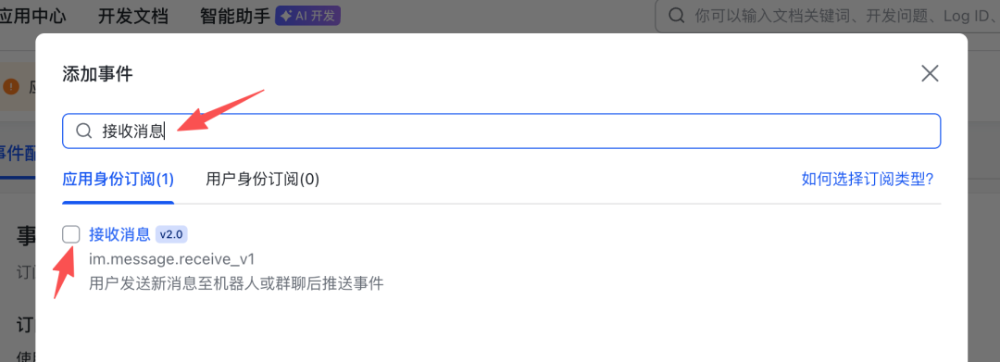
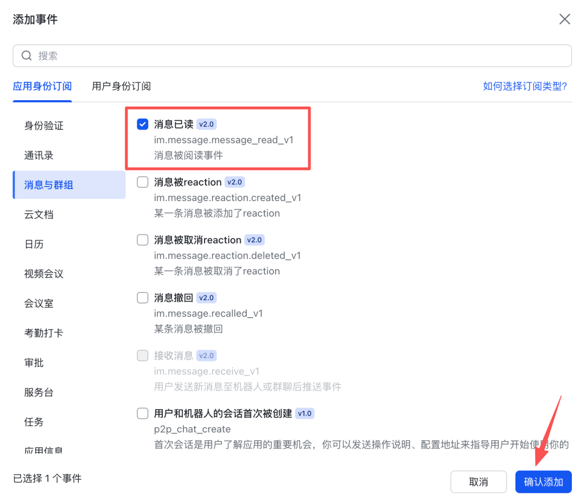
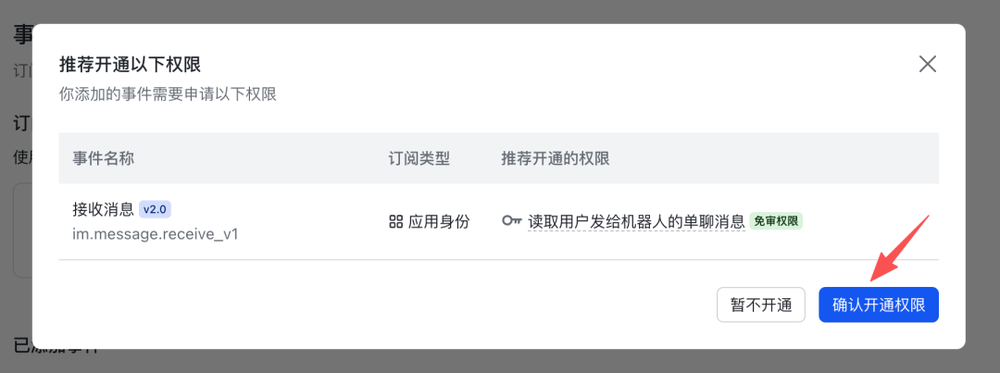
{"scopes":{"tenant":["im:message","im:message.p2p_msg:readonly","im:message.group_at_msg:readonly","im:message:send_as_bot","im:resource","contact:user.base:readonly","im:message.group_msg","im:message:readonly","im:message:update","im:message:recall","im:message.reactions:read","docx:document:readonly","drive:drive:readonly","wiki:wiki:readonly","bitable:app:readonly","task:task:read","contact:contact.base:readonly","docx:document","docx:document.block:convert","drive:drive","wiki:wiki","bitable:app","task:task:write"],"user":[]}}
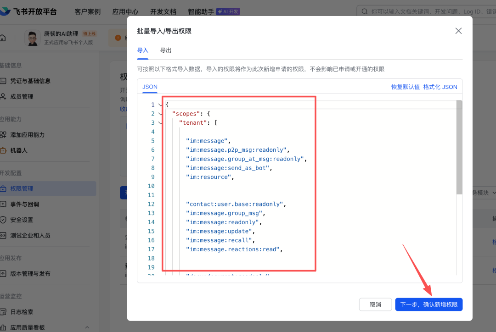
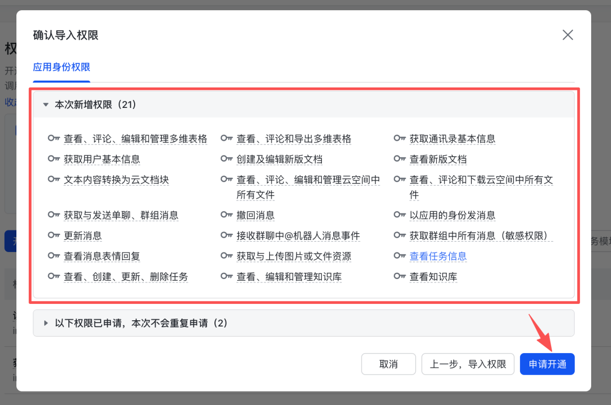
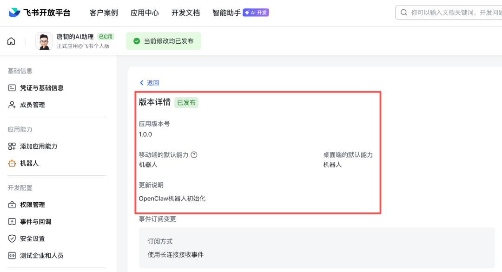
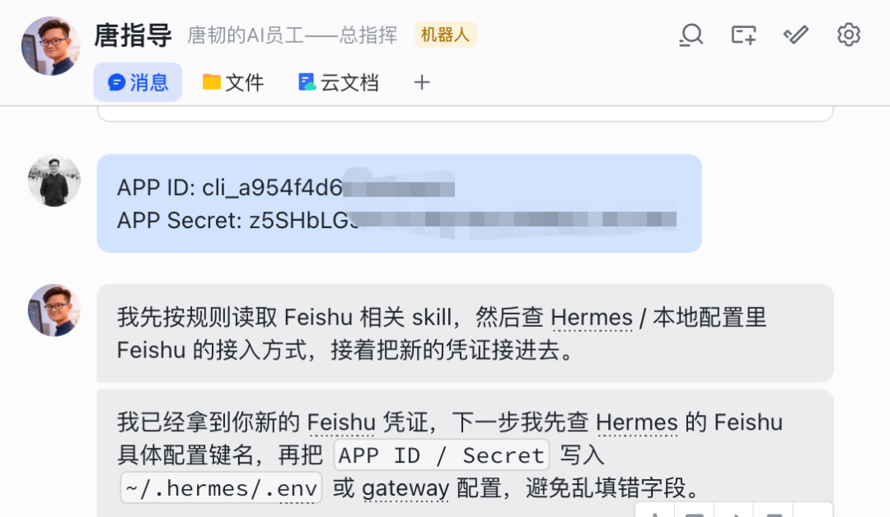
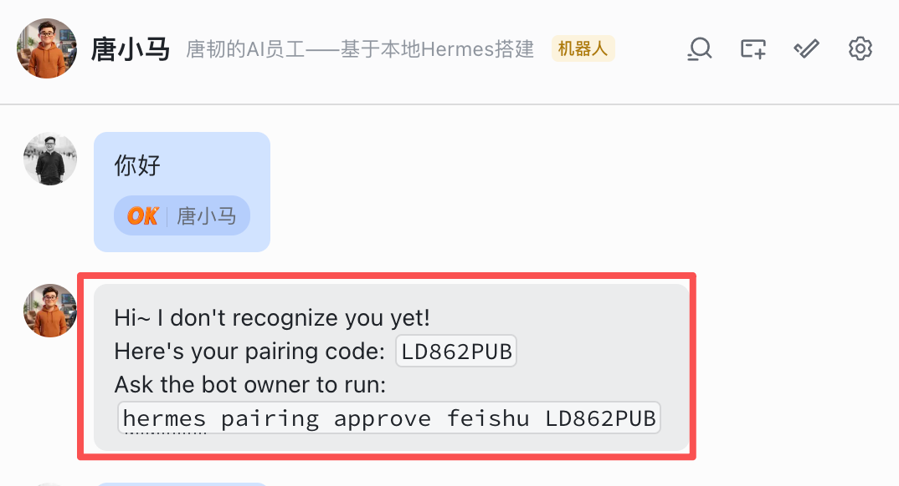
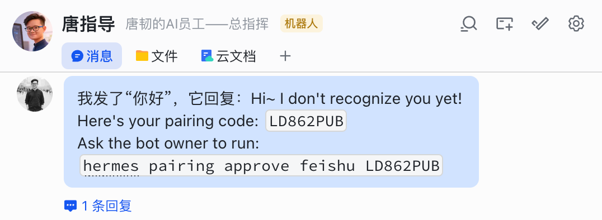
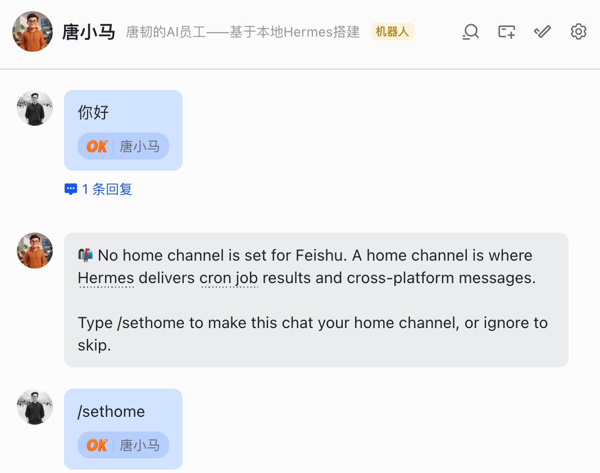
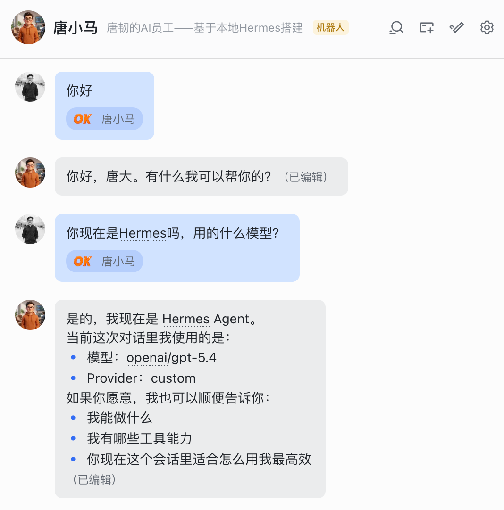

如果你从来没有部署过 OpenClaw，那这套教程就不适合你。如果你想领养一只龙虾，可以看我放在上面推荐阅读里的教程。
如果你已经安装过龙虾，不管是云端虾还是本地虾，这套教程同样适用。